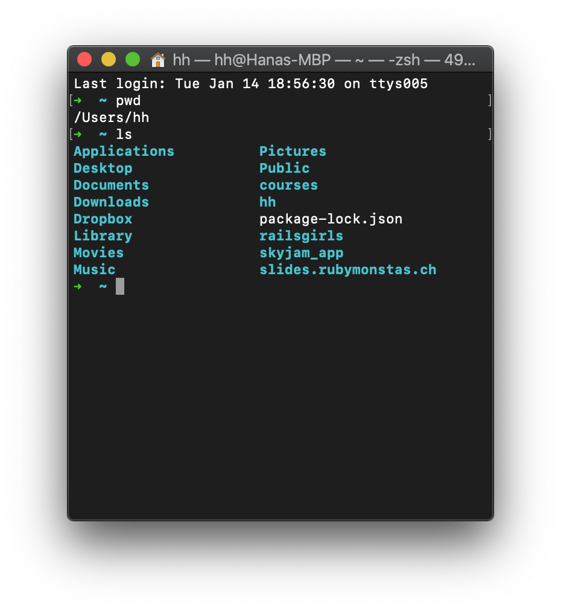
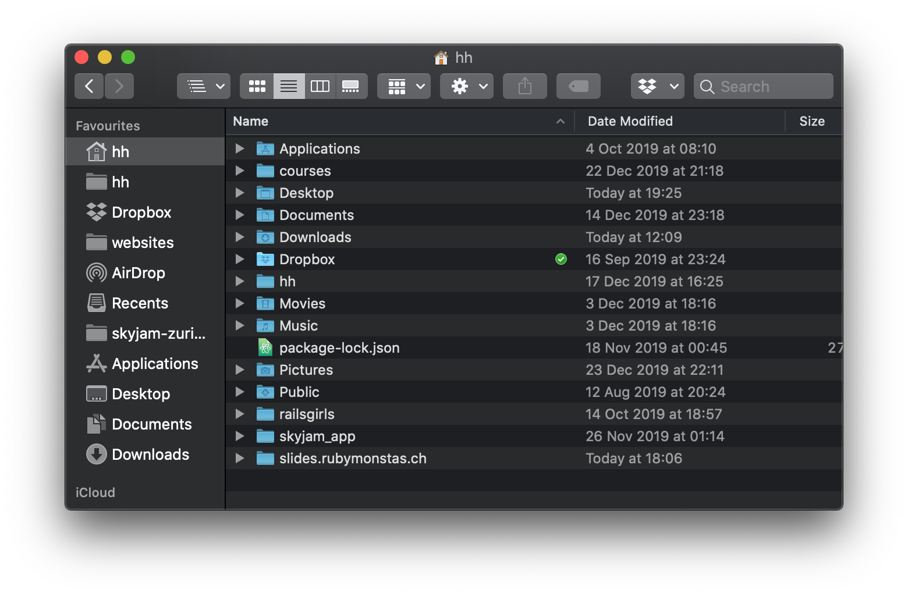

Ruby Monstas
Topic
Any text
Use bold to make the word/s stand out.
Write other groundbreaking information.
Keep it simple and clear.
Have fun!
List with fade-in fragments
- I'm the first item
- I'm the second item
- I'm the third item
- I'm the fourth item
- I'm the fifth item
Code
puts "Hi, I'm a code"Numbered lines
counter = 0
loop do
puts "#{counter} seconds since the loop started"
counter = counter + 1
endHighlighted lines
counter = 0
loop do
puts "#{counter} seconds since the loop started"
counter = counter + 1
endCommands and command line output
pwdstands for 'print working directory'
0 seconds since the loop started 1 seconds since the loop started 2 seconds since the loop started 3 seconds since the loop started
Keyboard keys
Press Cmd + Q
Press Ctrl + Alt + ↓
Images and nesting
Images
Set the image size with width or height
 Svg with max height

Additional Resources
What questions do you have?